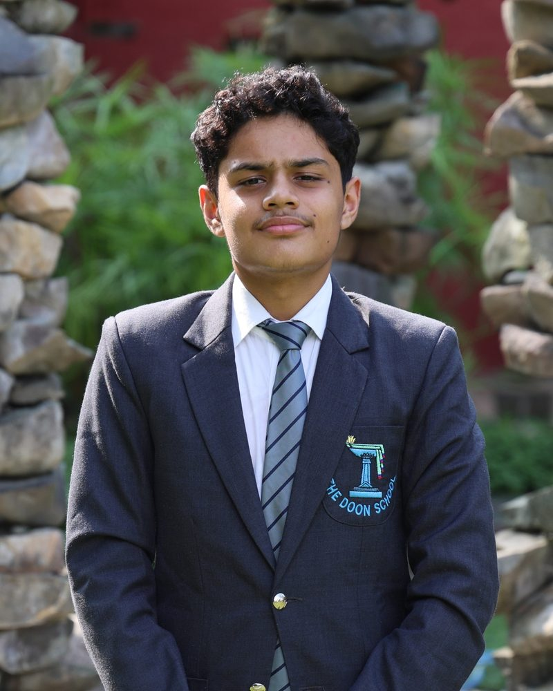
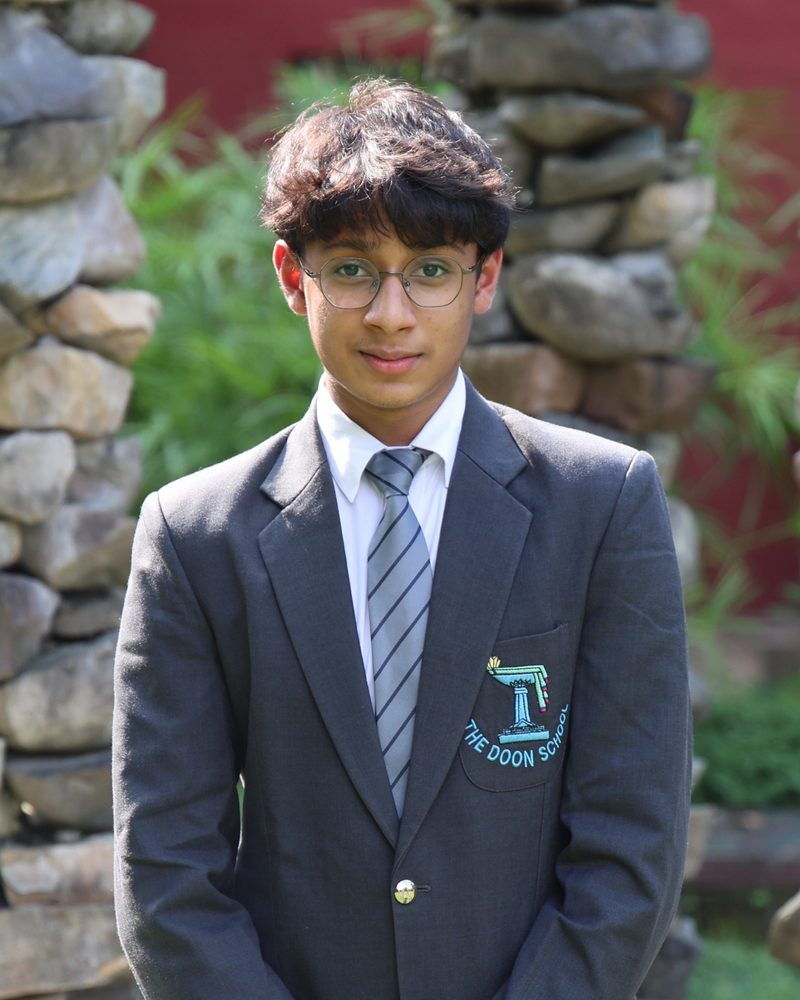
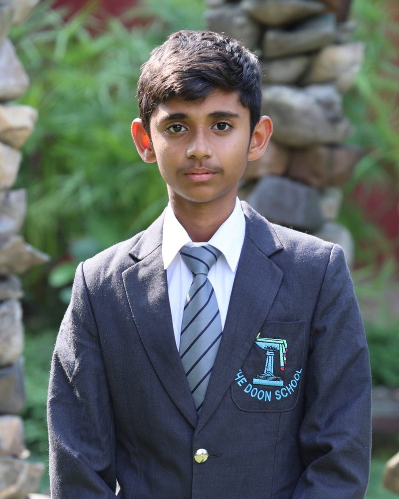

1
Rulebook
Description and objective, team composition, format and progression, run structure and timings, permitted and prohibited actions, penalties, appeals, and definitions.
Events / Terra Incognita
The Doon School · 08–10 December 2026
The arena is not released beforehand and no prior map is permitted. The robot must build its own map while tracking its position inside it, and the error it accumulates doing so is the whole difficulty of the event.
SLAM: Autonomous Mapping & Pathfinding
Rules
Event details
Judging
Documents
6 documents · available soon
These are the documents your team will receive for Terra Incognita. Between them they set out everything a team needs in order to prepare.
1
Rulebook
Description and objective, team composition, format and progression, run structure and timings, permitted and prohibited actions, penalties, appeals, and definitions.
2
Robot Specification
Dimensions at start and expanded, mass, power source and voltage limits, permitted actuators and sensors, control method, communication protocol, prohibited materials.
3
Arena Specification
A dimensioned scale drawing in plan view, all fixed dimensions with tolerances, surface material and finish, wall heights, printable colour references, and the exact range of any variation between rounds.
A school must be able to build a practice replica from this document alone.
4
Judging Rubric
Criteria with point values summing to a stated total, scoring levels, tie-break order, who scores what, and when scores are published.
5
Inspection & Safety
Pre-competition inspection checklist and schedule, consequences of failed inspection, safety requirements during runs, spectator boundaries, and the emergency stop procedure.
6
Support Material
A worked example, a starter guide to core techniques, the concepts a team should learn, common mistakes, and an FAQ.
We will release these documents to registered schools soon, and they will appear here at the same time.
Who runs it

Trijat Sah
Event Head
To be announced · TBC
Deputy Event Heads

Aaryansh Kejriwal

Arnav Kejriwal
Next
Robots sort hazardous, fragile and normal objects into matching bins while adapting to changing rules each round.